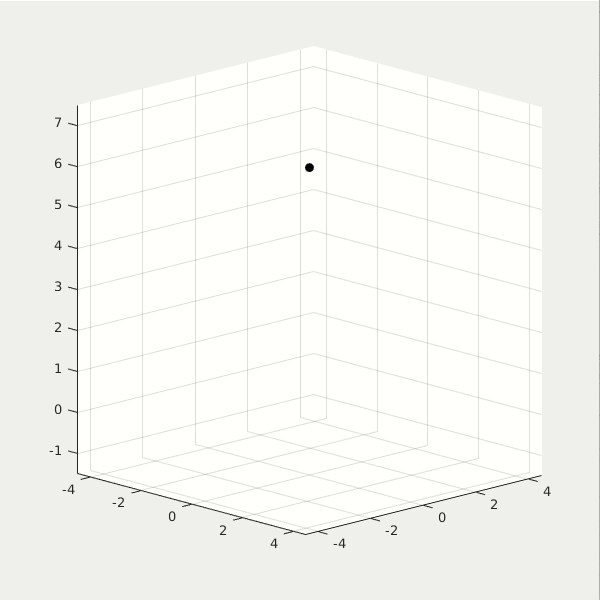
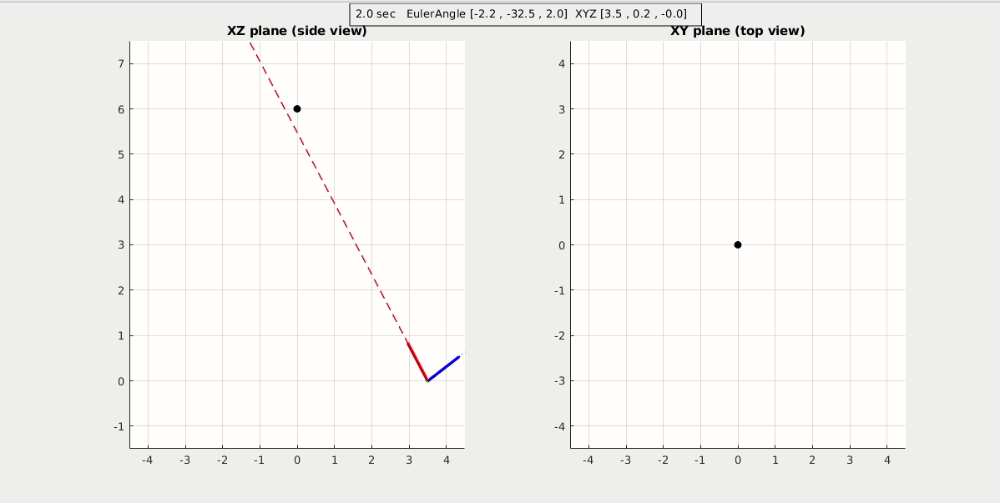
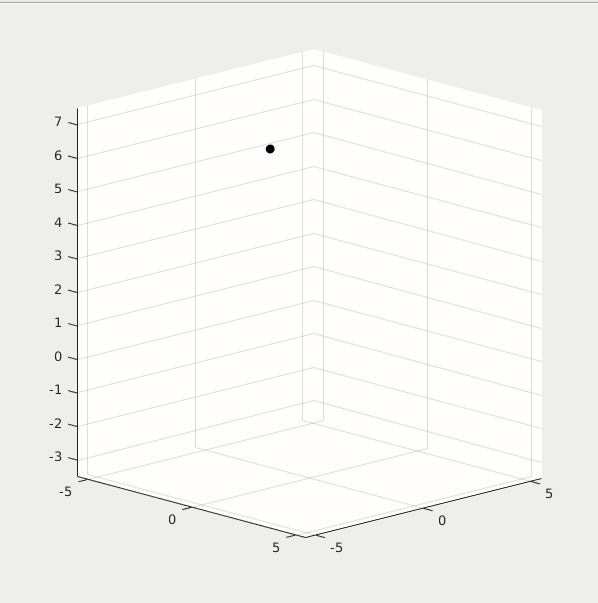
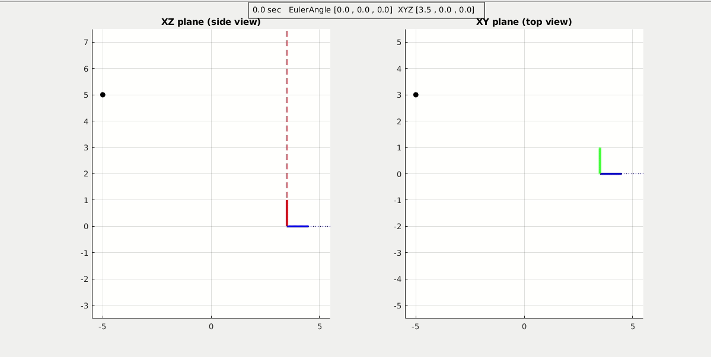
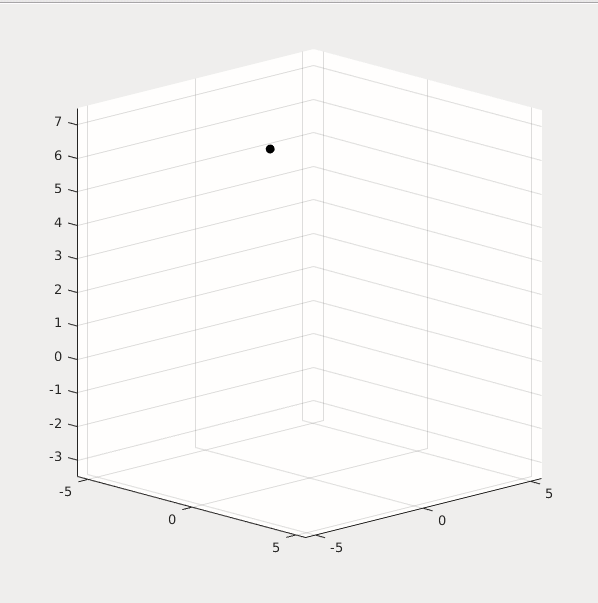

Star Tracker Control and Simulation
Demo (click to show gif animation)
1. Attitude Control demo
First demo shows the problem of attitude control using Euler Angles.
almost near gimbal lock .gif
gimbal lock .gif
Control without FindEuler Solver .gif
Control with non-linear FindEuler Solver .gif
2. Star Tracker demo
Second demo shows a full 6dof control of a Star Tracker spacecraft. The z-axis is the telescope direction (red axis), it will always point toward its target of interest, which is the black circle star. In the meantime its x-axis is the antenna direction (blue one), it will keep a certain direction to recieve signal from ground station.


click to see more demos: different target star position, differnet XYZ orbit for star tracker spacecraft.
demo1 (3D).gif
demo1 (Side).gif
demo2 (3D).gif
demo2 (Side).gif
demo3 (3D).gif
demo3 (Side).gif
3. Non-linear vs Linear Star Traker
In extreme cases, where XYZ orbit varies rapidly, the linear control logic of Star Tracker becomes unstable. So a non-linear control logic of Star Tracker is introduced. Rather than using PIDs combination to calculate reference Euler angles, the non-linear Star Tracker uses a custom non-linear equations to calculate the reference Euler angles. It is more stable, but more calculation loading.
Linear Star Tracker Control (at extreme case):


Non-linear Star Tracker Control (at extreme case):

{kind=link}
{kind=link}
{kind=link}
{kind=link}
{kind=link}
{kind=link}
{kind=link}
{kind=link}
{kind=link}
{kind=link}
Overview
In applications where the sensor will never operate near pitch angles of +- 90 degrees, Eular Angles are a good choice.
Euler angles can represent the 3D orientation of an object, using a combination of 3 rotations about"different" axes.
For convenience, we use multiple coordinate frames to describe the orientation of the sensor, including the "inertial frame," the "vehicle-1 frame," the "vehicle-2 frame," and the "body frame."
The inertial frame axes are Earth-fixed, and the body frame axes are aligned with the sensor. The vehicle-1 and vehicle-2 are intermediary frames used for convenience when illustrating the "sequence of operations" that take us from the inertial frame to the body frame of the sensor.
Inertial Frame
The "Inertial" frame: x points north, y points east, z points down. North-East-Down frame (NED)
The sequence of rotations is first yaw, then pitch and roll.
Vehicle-1 Frame
The "Vehicle-1" frame: yaw represents rotation about the inertial frame z-axis by an angle psi.
The yaw rotation produces a new coordinate framw where the z-axis is aligned with the inertial frame, and the x and y axes are rotated by the yaw angle psi. We call this new coordinate frame "Vehicle-1" frame.
The rotation matrix for moving from the Inertial to Vehicle-1 frame is,
R_ItoV1 = [[cos(psi) sin(psi) 0];[-sin(psi) cos(psi) 0];[0 0 1]]
Vehicle-2 Frame
The "Vehicle-2" frame: pitch represents rotation about the Vehicle-1 y-axis by an angle theta.
The rotation maxtrix for moving from the Vehicle-1 to the Vehicle-2 frame is,
R_V1toV2 = [[cos(theta) 0 -sin(theta)];[0 1 0];[sin(theta) 0 cos(theta)]]
Body Frame
The body frame is the coordinate system that is aligned with the body of the sensor. On an aircraft, the body frame x points out the nose, y points out the right side, z points out the bottom.
The body frame is obtained by performing a rotation by the angle phi around the Vehicle-2 frame x-axis.
The rotation maxtrix for moving from the Vehicle-2 to the Body is,
R_V2toB = [[1 0 0];[0 cos(phi) sin(phi)];[0 -sin(phi) cos(phi)]]
Rotation Matrix
Gimbal Lock
Gimbal lock occurs when the orientation of the sensor cannot be "uniquely" represented using Euler Angles. The exact orientation at which gimbal lock occurs depends on the order of rotations used.
Example
For example, suppose that we want to obtain inertial frame acceleration so that we can integrate to obtain velocity estimates in the NED directions. Let vB be the measured Body-frame acceleration vector reported by the sensor. Then the inertial frame acceleration is: VI = R_BtoI*vB. The vector VI gives us the "measured" acceleration with respect to the Inertial frame. Note that this is not the "actual" acceleration. A little more work is required before we can extract the physical acceleration of the sensor. see http://www.chrobotics.com/library/accel-position-velocity
Next example, convert rate gyro data to the Inertial frame. The rate gyro data is reported with respect to the Body frame of the sensor. This means that each gyro angular rate must be converted to a different coordinate frame.
The z-axis gyro output must be rotated into the Inertial frame, The y-axis gyro output into the Vehicle-1 frame. The x-axis gyro output into the Vehicle-2. Let p represents the Body frame x-axis gyro output, q y-axis gyro ouput, r z-axis output. Then the Euler Angle rates are, [phi_dot; theta_dot; psi_dot] =
[[1 sin(phi)tan(theta) cos(phi)tan(theta)];[0 cos(phi) -sin(phi)];[0 sin(phi)/cos(theta) cos(phi)/cos(theta)]]*[p;q;r]